PASTA RECOVERY
3D printers are one of the most important tools for industries and makers alike, but they generate enormous amounts of waste. Each idea and prototype requires a couple of tries at minimum to be successful. But what happens to those discarded pieces of plastic? Pasta Recovery aims to make recycling 3D prints cheaper and more accessible. The aim is to create a solution that every person with a printer could have in their maker-space.
A push screw is a necessary and common part in many existing 3D print recyclers. It is expensive because it is made out of high-quality materials and requires labor-intensive machining to manufacture. Pasta Recovery replaces the push screw with a more common and accessible alternative; a drill bit. We created a testing rig around the drill bit and found that the system was able to reliably extrude material, a change resulting in nearly 90% cost reduction in the recycling process. From that point, we developed the testing rig into a full-featured recycling machine.
Collaborators: Ben Dowers & Dhruve Mohan
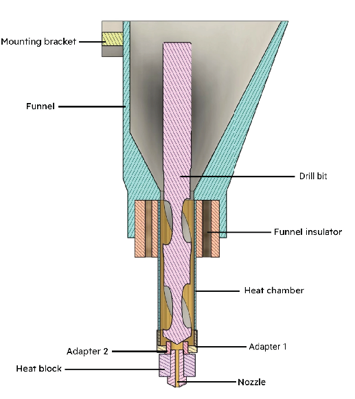
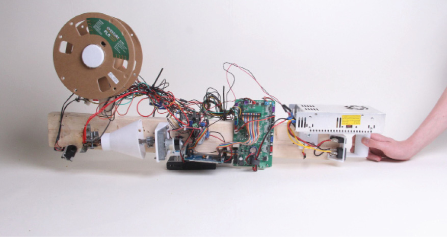
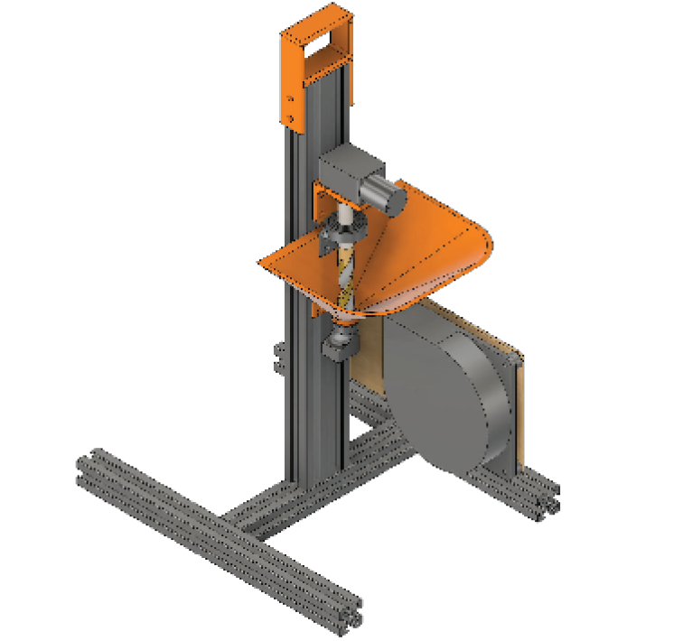
ECO-SORT
Attempts at reducing packaging waste are ubiquitous in 2025. People have recycling fatigue as they are bombarded with mixed messages about the efficacy of recycling, the human costs of recycling, and how failures in the recycling systems perpetuate environmental problems and dependence on plastic products. It can be hard not to feel powerless to make any positive or right decision.
Eco sort is a wall mounted device placed adjacent to waste and recycling bins. The device scans waste as it is held under a camera and using a custom AI model it detects and identifies what type of waste is in hand. It then signals with color coded lights to which bin the waste belongs. Additionally, the screen gives snippets of information on how that waste is processed. This teaches people as they go, allowing them to develop effective waste management habits.
Recycling centers face immense challenges when waste is improperly sorted. The results can be dangerous, even deadly to those people charged with working at the facilities, at worst. At best, the systems can not recycle and process the inaccurately sorted materials, preventing recycling and leading to more waste and pollution. A simple engaging machine like Eco-Sort can play a role in fixing the problem at the source by accurate identification, increased user engagement, early education and awareness.
Collaborators: Margo Kusetsnova
Connectivity ports
Camera
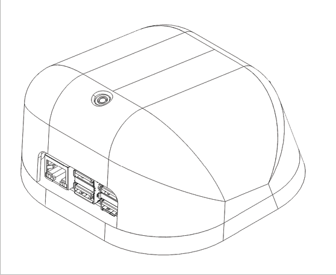
3D printed housing
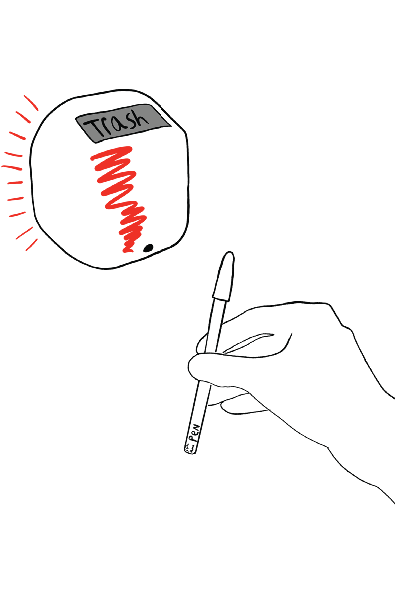
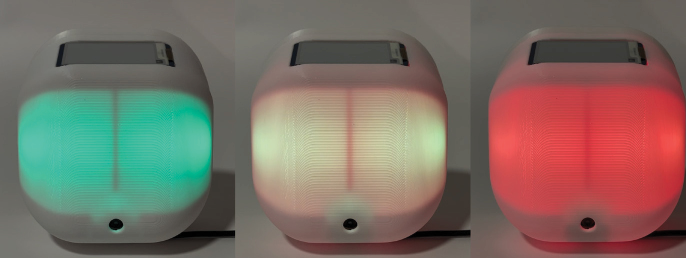
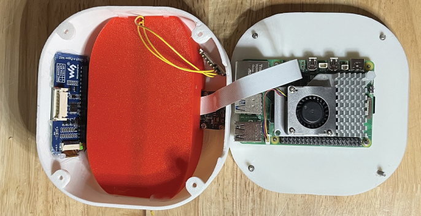
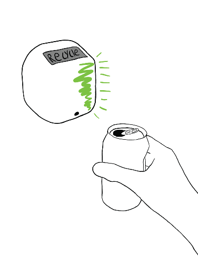
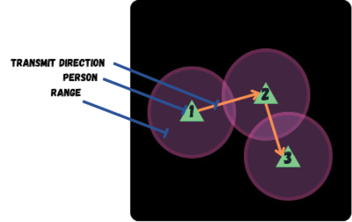
IMPLEMENTING MESHTASTIC INTO SYRIA
On December 8, 2024, Syria’s dictatorship fell. As Syria faced the challenge of rebuilding, one of their issues was their lack of secure communication systems. The project worked alongside several schools in Syria. Through several meetings and research we learned about their hopes and their barriers. The project chose Meshtastic. Meshtastic does not rely on any external means of communication like cellular networks which are unreliable in times of strife, conflict, and war. Meshtastic is an open source, decentralized network of low power radios that send signals to each other. These radios do not require licenses or subscriptions. Most powerfully, each time a new device is added to the network it expands the range and reach of each device.
Bringing Meshtastic Into Syria aims to create a low cost, and accessible communication grid managed, maintained, and utilized by Syrian citizens. Our kit provided a custom built device with a simple, visually based instruction guide. It supported hands-on education in Syrian schools while empowering students to create their own communication device, build off grid networks with immeasurable possibility.
Collaborators: Mathew Mcadam
Microcontroller
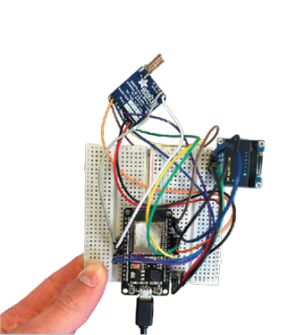
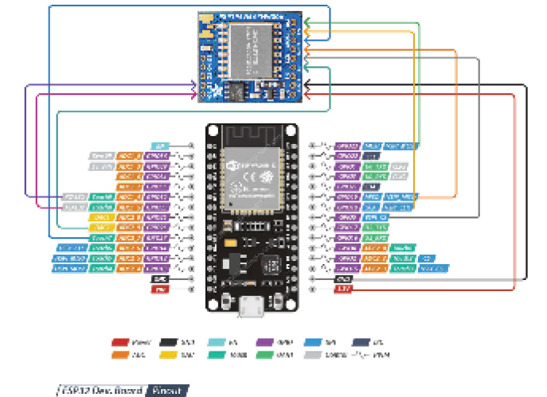
Radio
Screen
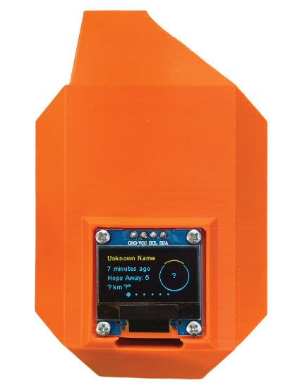
Collaborators: Bennet Dowers
Drone launch test
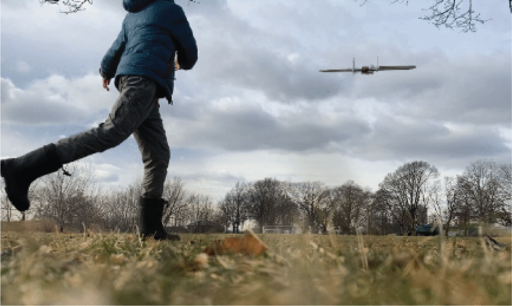
GREENS 4 GROWTH
Greens 4 Growth was a project in collaboration with Harvard Forest. As a land conservation site, there are many people that keep track of forest data to determine its health and gather other related information. This is time-consuming and can produce inaccurate results because it requires people to go out into the forest and manually measure, count trees, and add data about the plants and species. Harvard Forest, a large research center, needed a way to collect data more rapidly and accurately. Greens 4 Growth aimed to make an autonomous drone solution that could monitor the state of the trees specifically and act differently based on the user’s command. It could be configured to plant new plants, add nutrients, scan the canopy, and autonomously track forest data through a custom computer vision model.
AI model detecting tree canopy data
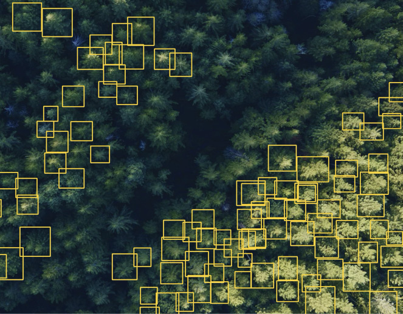
Fixed Wing drone
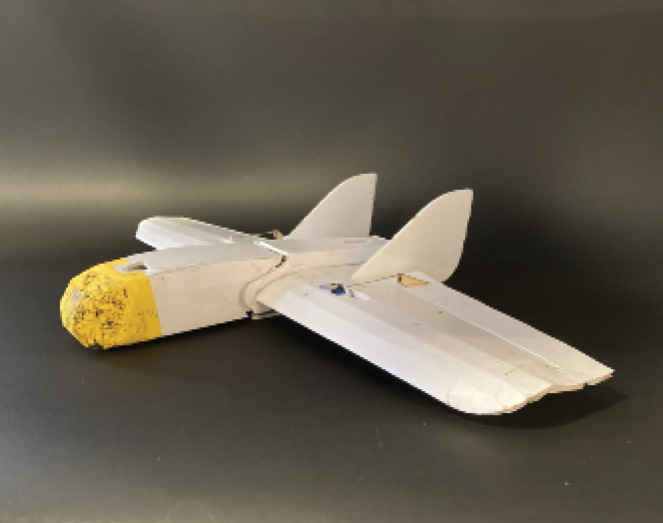
Nose cone
Wing
Tail Fins
Ailerons
Collaborators: Audry
CLINK LINKERS
Clink Linkers is a pop-up play structure designed for kids between 8 and 11 for NuVu Marketing. It was part of a series of pop-up play structures meant to represent different parts of the design process. Clink Linkers was tasked with representing brainstorming, by allowing kids to create a physical representation of their collaborative brainstorming ideas. Through user interviews, it was determined that kids were most interested in activities that had a “build-your-own” aspect. This knowledge guided the design of an interactive, constantly changing space. The pop-up play structure was assembled out of a wood frame, fixed with customized pool noodles, which had strengthened cores, seats, and clips to connect them together. This design allowed the kids to physically create their own web of ideas and visualize the importance of collaboration in the brainstorming process.
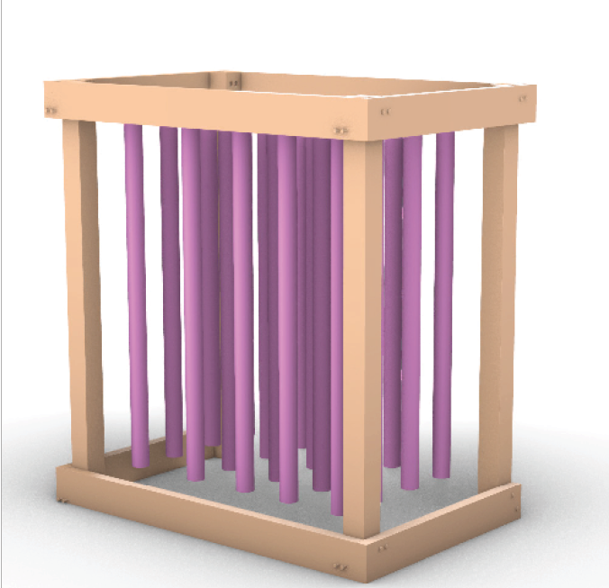
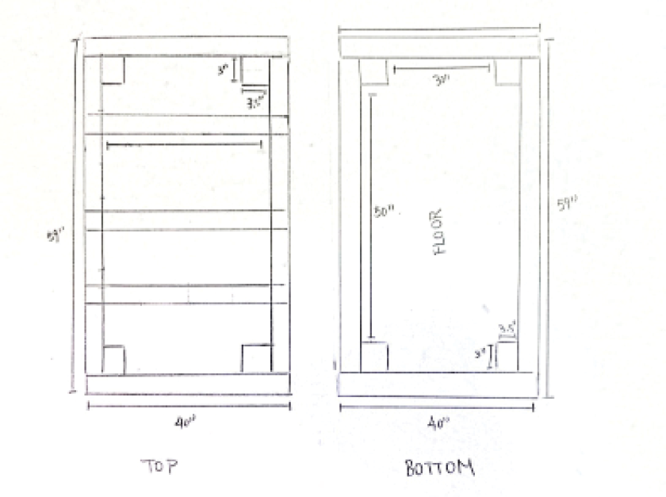
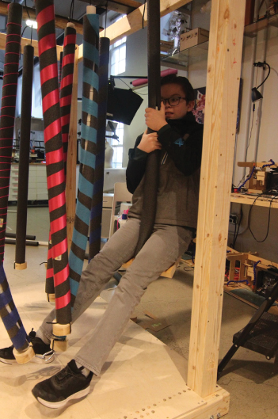
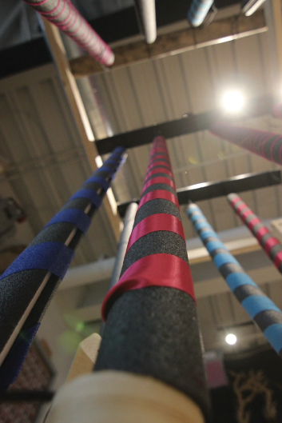
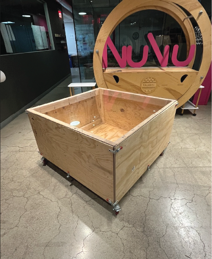
COMBAT ROBOT ROBOTICS (NCRL)
Something was missing at my high school. Students came from different cities and towns and it seemed this led to a lack of community. The school had no robotics program. I started the NuVu Combat Robotics League (NCRL) to develop a community around something fun and educational. Combat Robotics brought a large group of kids together using engineering, creativity, laughter and community building. The biggest challenge was convincing NuVu leadership that it was a worthwhile investment. There had never been a Robotics club or team at NuVu. I had to learn how to communicate the benefits effectively, present my proposal, come up with a budget, and create a case for space and staff support. I was pushed outside of my comfort zone but ultimately successful. Advocating for and building The NCRL has impacted not only me but also the students and staff. The NCRL has brought monthly organized events, endless laughter and a strong community bond. It has welcomed not only those who are interested in making robots but also those who are more inclined to performance, making and design. It is completely student run but gifted with staff support.
Collaborators: Teamatates
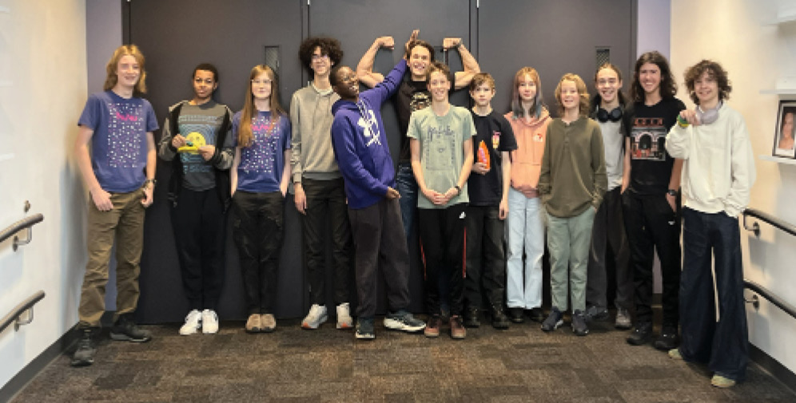
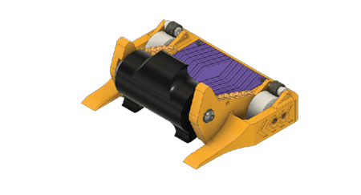
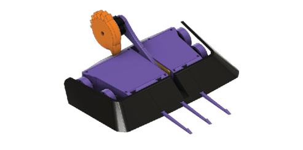
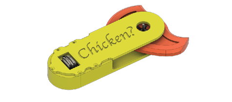
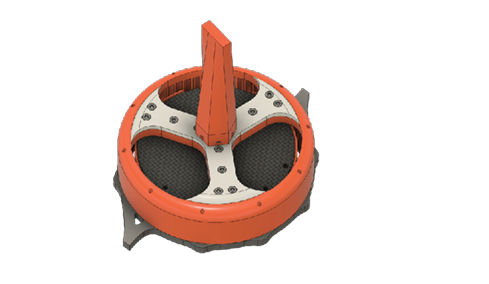
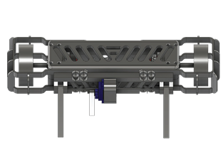
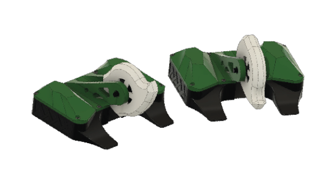
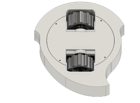
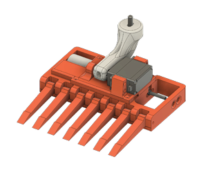
O&M Training Alternative
This project aims to allow blind users to be more independent when commuting to unfamiliar places bye creating a navigation system that records the figurative steps taken to get to a place. This will allow users to recall their steps they have taken to get to places they have recorded with others without the need of an O&M (Orientation & Mobility) trainer. Lots of existing systems are unreliable and only show location, objects or specific markers. The goal of the project is to create a device that fulfills the purpose of O&M training allowing users to be more independent and train themselves on new routes.
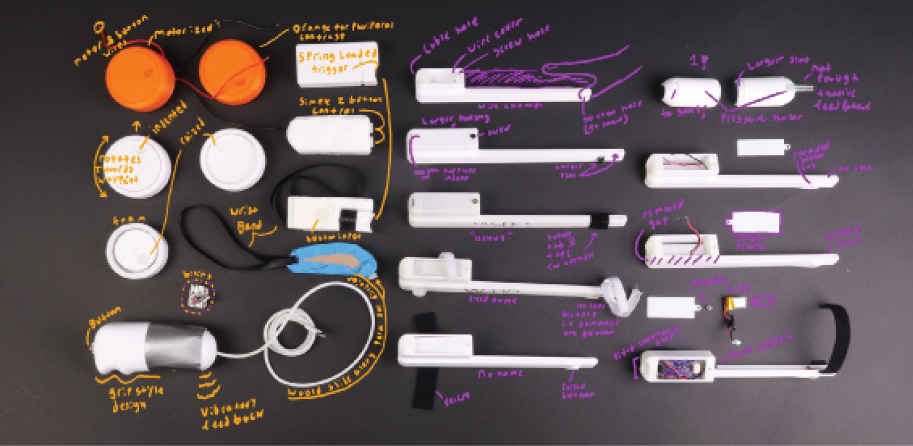
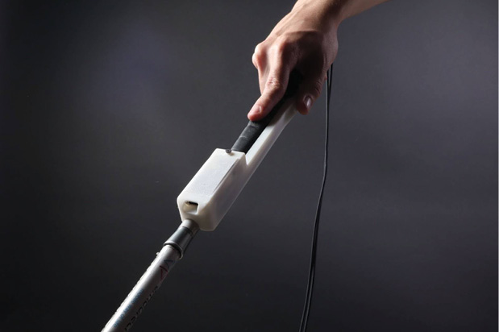